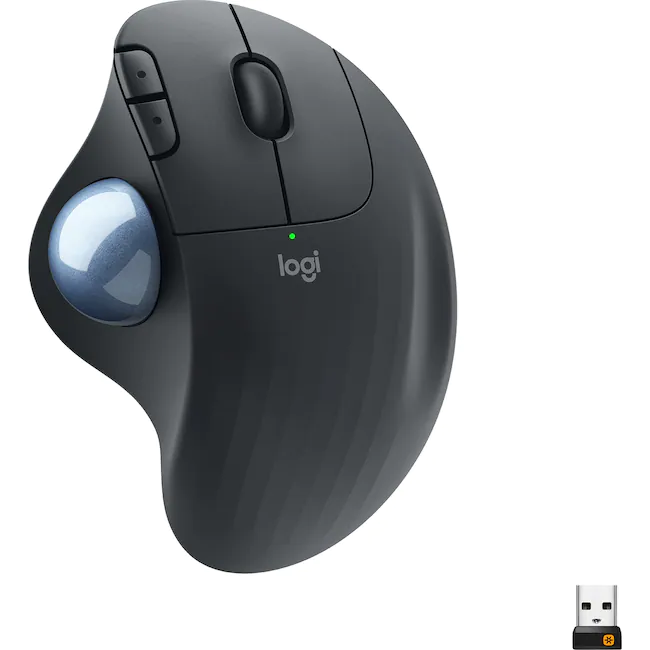

Optokobler/multiplexer
Optokobler : 1000 NOK (+ mva. og frakt)
- Galvanisk/isolert skille mellom pc og GPS/AIS/annet
- High-Speed, to-veis, RS422/RS232 NMEA
- Produsent: SEAMASTER APS
Multiplexer : 1500 NOK (+ mva. og frakt)
- 3 input (2x4800 1x4800/38400) og 1 output (4800)
- Erstatter opptil 3 optikoblere
- Produsent: ShipModul

Rullemus
Mus passende for båt: 500 NOK (+ mva. og frakt)
- Ergonomisk formet
- Tommelstyring
- Perfekt til bruk i båt
SailorsMate Skjerm
Skjerm : 10.000 NOK (+ mva. og frakt) for alle størrelsene
- Høy lysstyrke (3-4 ganger så lyssterk som "vanlige skjermer")
- Kan dimmes til omtrent null lys
- Vanntett og robust utførelse i rustfritt stål
Skjermstørrelser
- 19.0": Oppløsn. 1280x1024, kontrast xx, 450*374*67.6mm
- 21.5": Oppløsn. 1920x1080, kontrast xx, 550*335*67.6mm
God skjerm er viktig for opplevelsen av kartplotteren. Vi anbefaler å bruke så stor skjerm som mulig.
Vi anbefaler ikke å benytte skjerm som har lavere oppløsning enn 1280x1024.
Salgsbetingelser
Generelt:
- Mva. og porto kommer i tillegg til oppgitte priser.
- Hvis ikke annet er avtalt sendes faktura sammen med varen.
- Alle varer forblir SailorsMate AS sin eiendom inntil full betaling er mottatt, det behefter salgspant.
Frakt:
- Varene sendes som oftest med pakke via Posten/Bring.
- Etter nærmere avtale: Posten express over natt, Bring express, Hurtigruten, Jetpack eller andre fraktselskaper.
- All frakt belastes kjøper.
Reklamasjon:
- Kjøper har ansvar for varen(e) etter kjøpsloven. Defekte varer må rapporteres til SailorsMate AS så snart som mulig.
- Kjøper taper sin rett til å gjøre en mangel gjeldende dersom han ikke innen rimelig tid etter at han oppdaget eller burde ha oppdaget den, gir Sailorsmate melding som angir hva slags mangel det gjelder.
- Reklamerer kjøperen ikke innen 2 år for PC og 1 år for monitor etter den dag da han overtok tingen, kan han ikke seinere gjøre mangelen gjeldende.
Angrerett og returrett:
- Hvis kjøper angrer på et kjøp, er det Lov om opplysningsplikt og angrerett mv. ved fjernsalg og salg utenfor fast utsalgssted (Angrerettloven) som gjelder. Kjøper har full returrett i 14 dager fra kjøper har mottatt varen. Varen må være ubrukt og uåpnet. Tilbakebetaling skjer først når returvarene er mottatt i god stand. Kjøper betaler selv porto for returen.